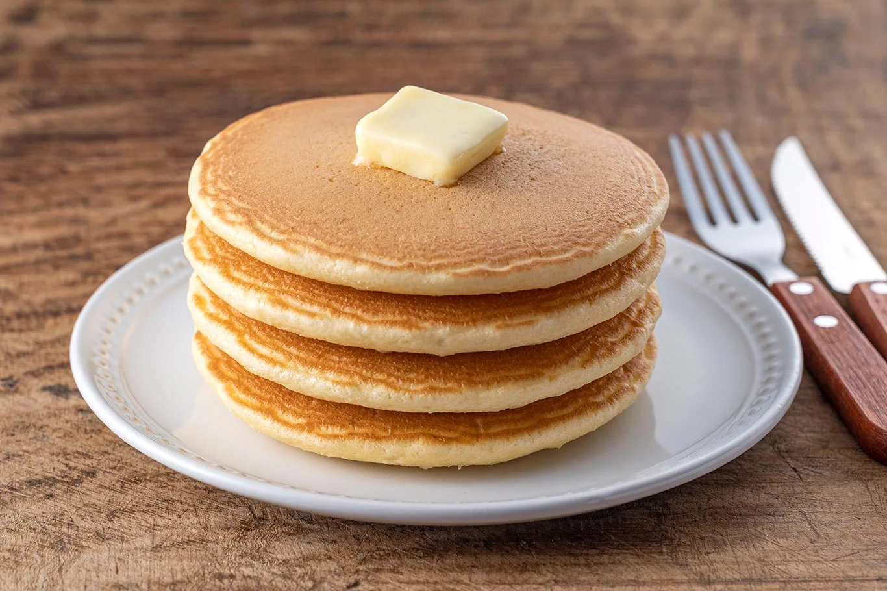
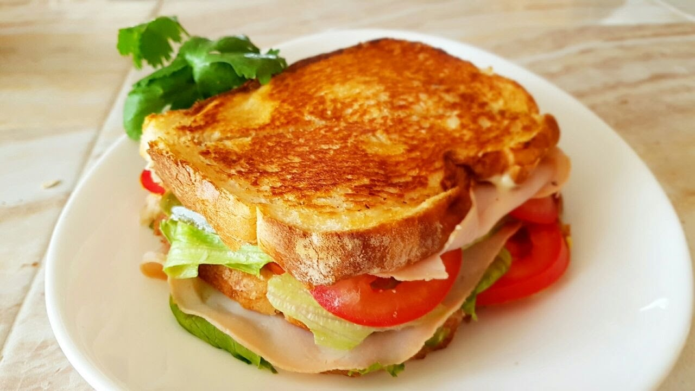
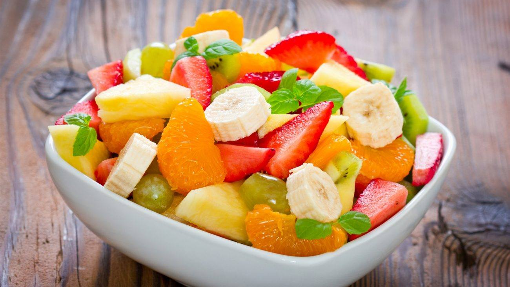

1. Desayuno típico (Chapín)
Incluye huevos, frijoles, plátanos fritos, queso, salsita de tomate y tortillas.
“El desayuno es la base fundamental para iniciar la jornada con energía y bienestar.”
Incluye huevos, frijoles, plátanos fritos, queso, salsita de tomate y tortillas.
Deliciosos panqueques acompañados de miel o maple, ideales para un desayuno dulce.


Pan relleno de huevo, queso, jamón o tocino.
Mezcla de frutas frescas, ideal para un desayuno ligero y saludable.

Incluye huevos al gusto, tocino o salchicha, pan tostado, papas y café o jugo natural.
El omelet de vegetales lleva huevos preparados con tomate, cebolla, chile pimiento y queso, acompañado de pan tostado y papas.